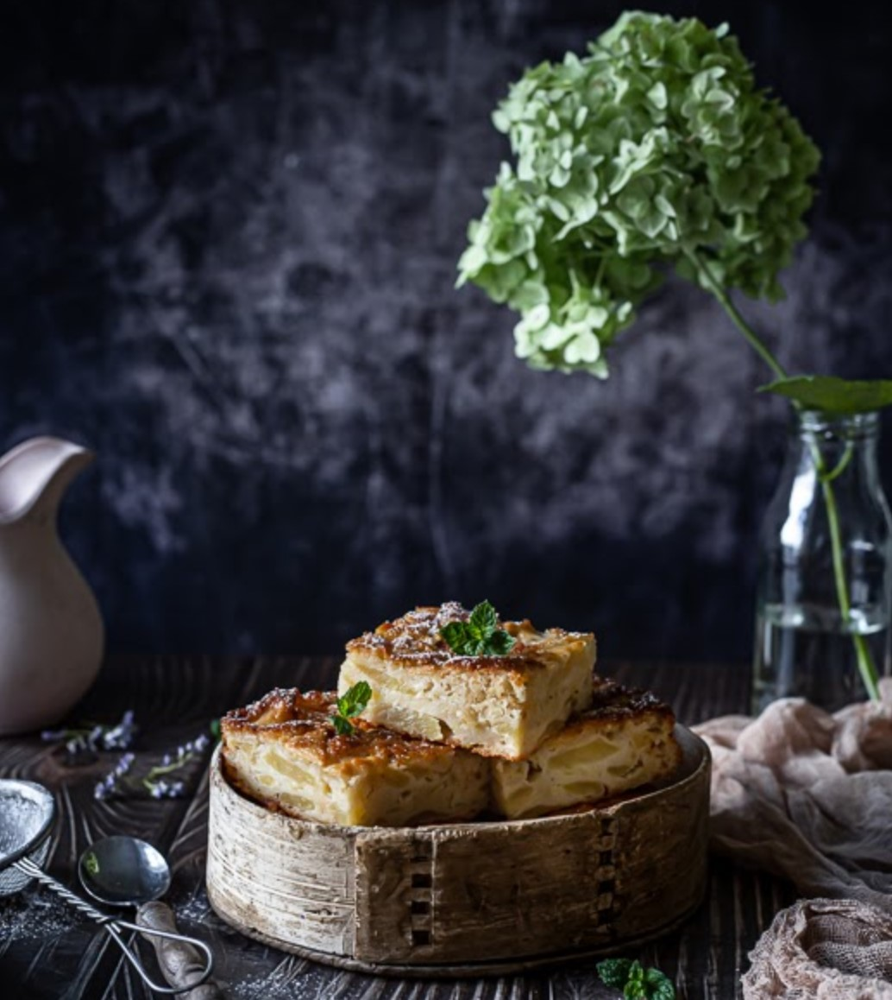
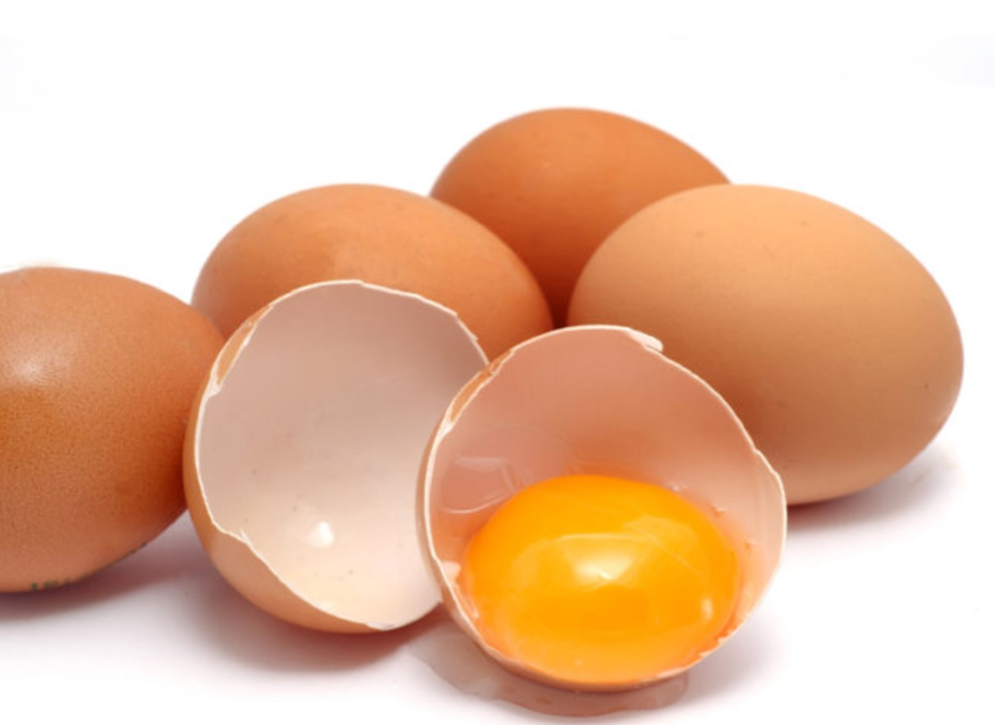

Simple and delicious APPLE cake
|


|
| Ingredients |
Amount |
| Eggs |
4 |
| Oil |
12 tbsp |
| Sugar |
12 tbsp |
| Flour |
12 tbsp |
| Baking powder |
2 tsp |
| Apples |
1,5 kg |
- Step: Beat the eggs with a whisk. Add oil to the foam. Stir. Mix the flour with baking powder and sugar, and add to the egg-oil mixture. Finally, add apple pieces.
- Step: To make the cake juicy, you can add enough pieces of apple to blacken the dough. Mix all the dough well and pour it on a large baking sheet. Then shake sugar and cinnamon.
- Step: Bake at 200 degrees for ~30-40 minutes until the cake is golden brown.
Allikas
|